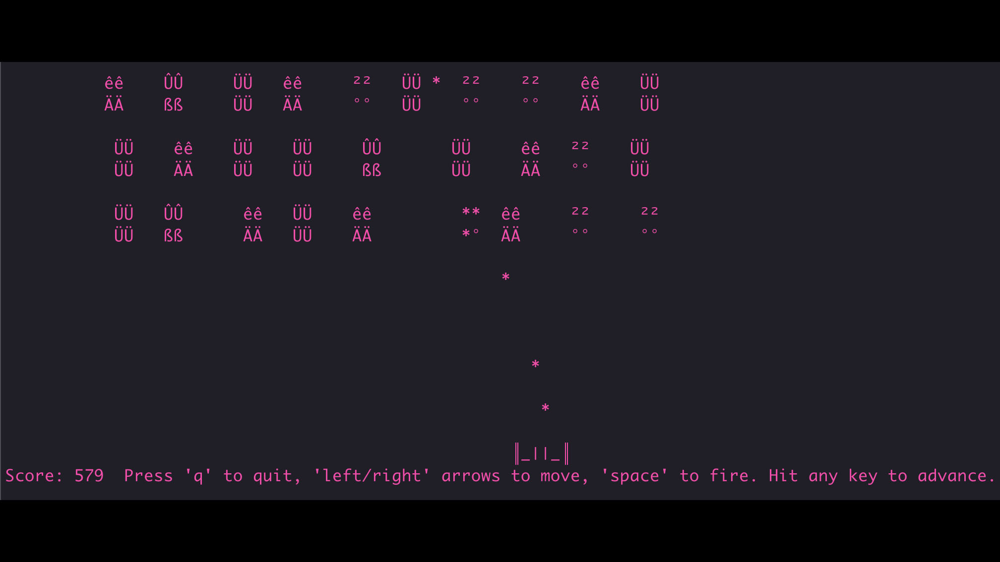

Features
- Classic Space Invaders-inspired gameplay
- Turn-based action, where each move or **blast** advances the game
- Retro ASCII art visuals
- Player movement (left/right) and firing **blasts**
- Alien movement and explosion animations
- Scoring system
How to Play
- Navigate: Use the
LEFTandRIGHTarrow keys to move your ship (║_||_║). - Fire: Press
SPACEto fire **blasts** (*). - Strategic Action: Each action (move or fire) advances one game frame. You cannot move and fire in the same 'turn'.
- Score: Start with 100 points, lose 1 point for each movement or **blast**, and gain 250 points for destroying an ASCIIlien.
- Win/Lose: Defeat all aliens to win, or lose if aliens reach the bottom of the screen or collide with your ship.
In-Game Screenshot
What the game looks like in a terminal environment.
Building and Running
To compile and run ASCIIliens, you will need the Rust toolchain installed.
# Clone the repository (if you haven't already)
git clone https://github.com/your-username/asciiliens.git
cd asciiliens
# Build the project
cargo build --release
# Run the game
cargo run --releaseDependencies
crosstermfor terminal handlingrandfor random number generation
License
This project is Licensed under the GNU General Public License v3.0. See the LICENSE file for details. This means you are free to use, modify, and distribute this game, or incorporate its code into your own projects, provided you adhere to the terms of the license, including maintaining its open-source nature.
Contributing
This project is a labor of love, aiming to capture the authentic feel of a very first program. While direct feature contributions to this specific repo might be limited to maintain its original spirit, please visit another Rust repository of mine, such as DevRS, to collaborate on more active development!